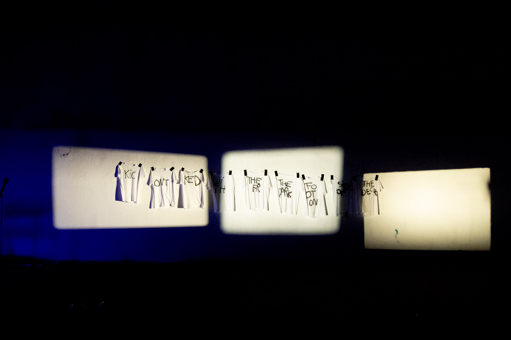
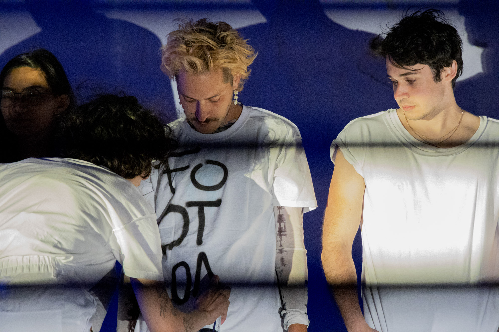
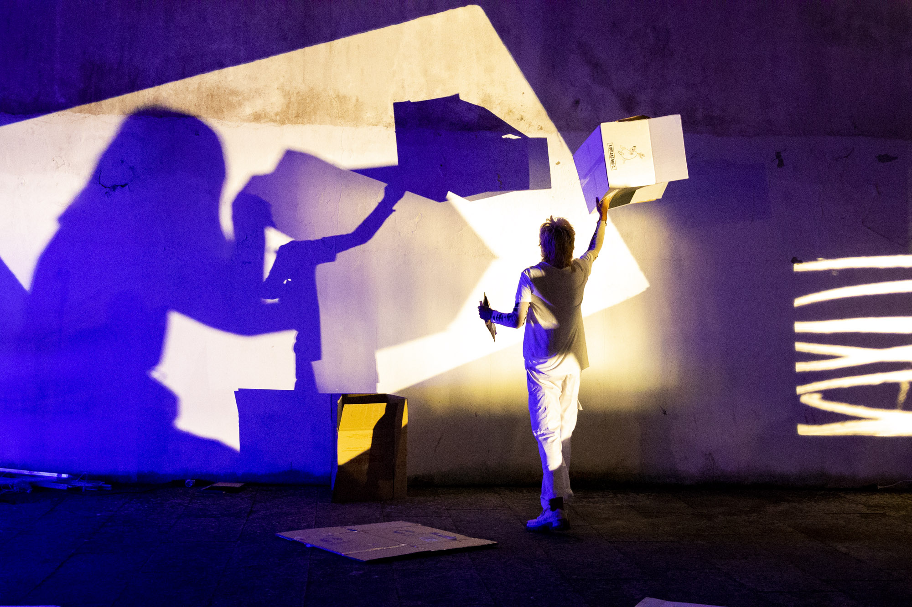
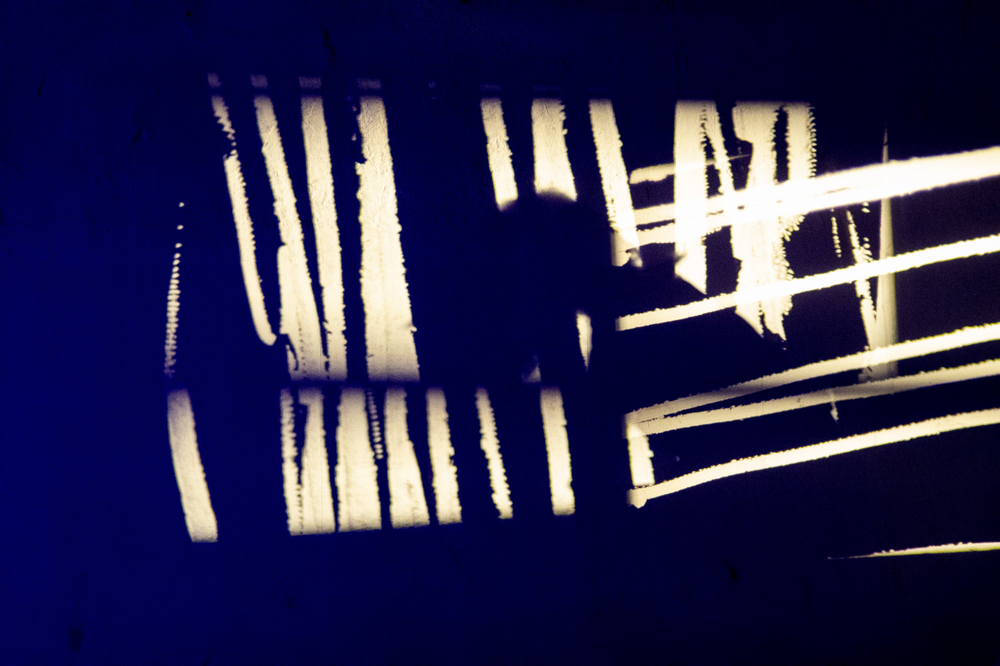
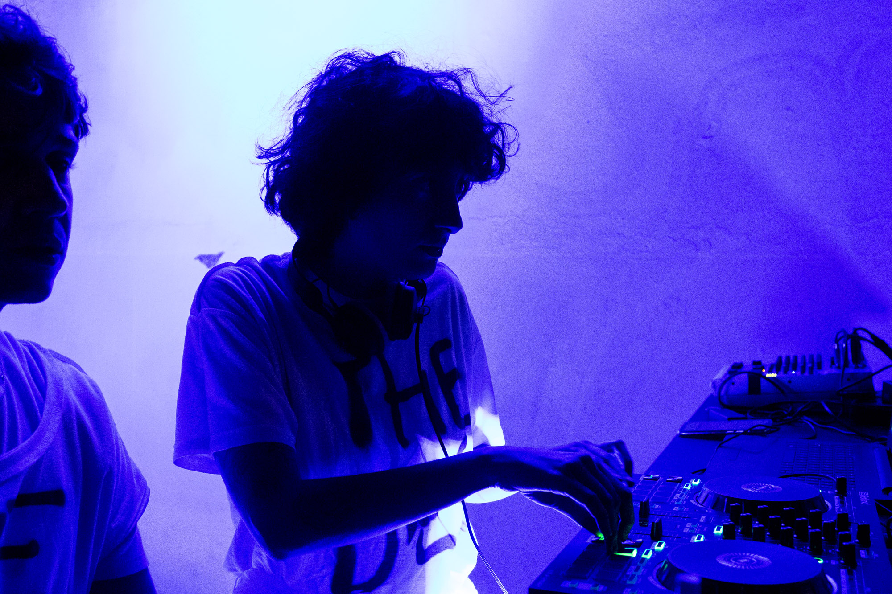
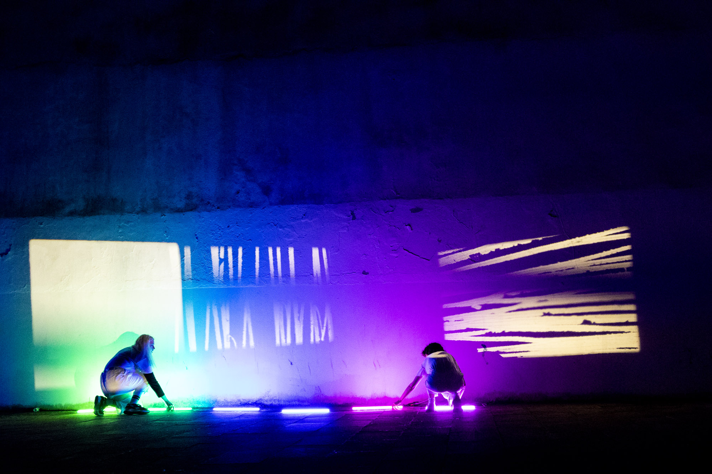
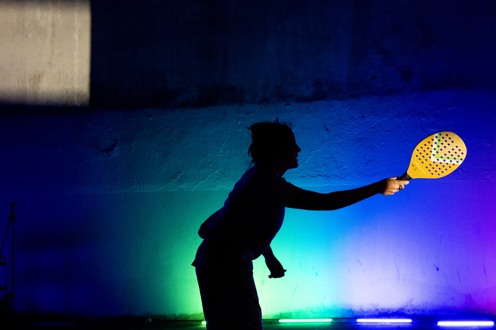
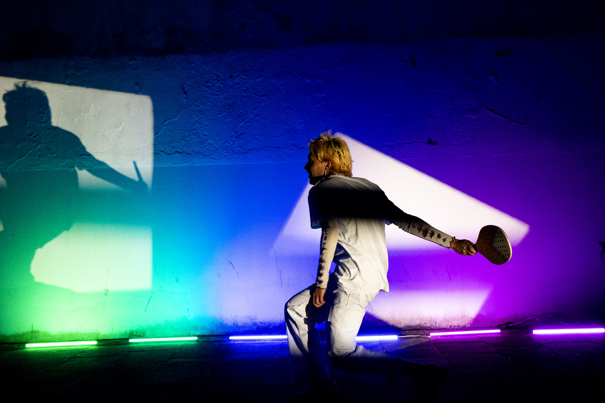
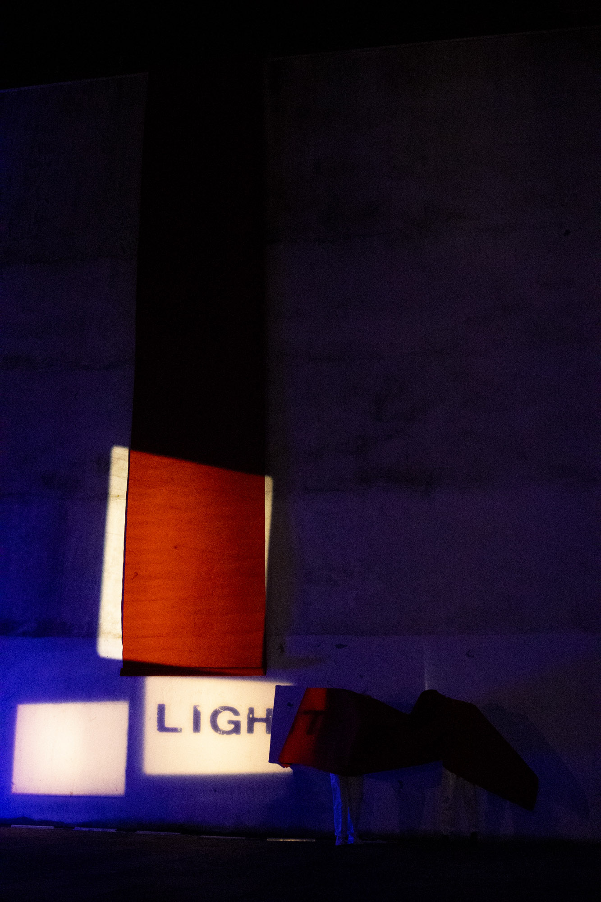
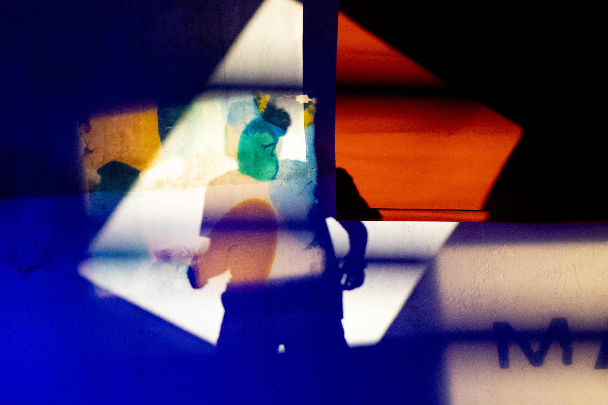
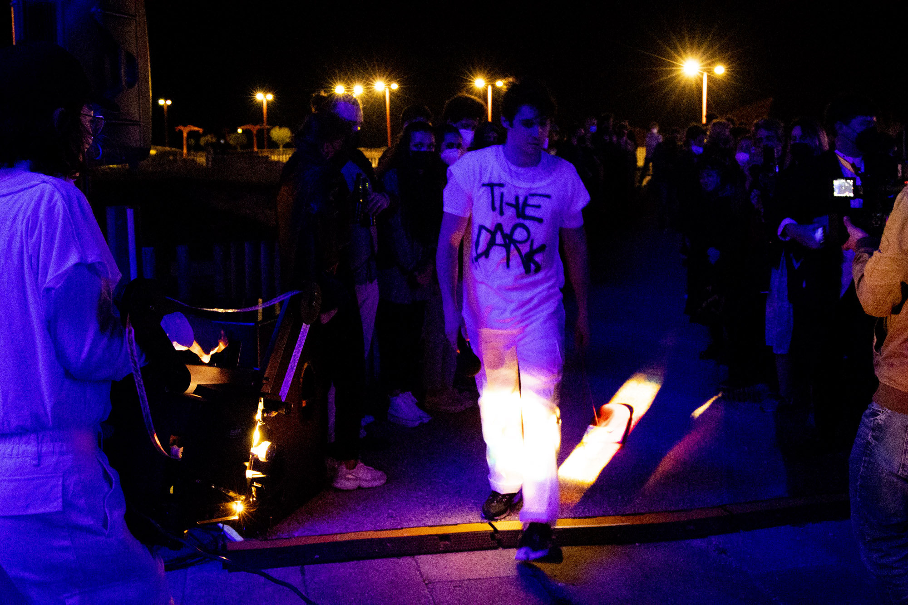
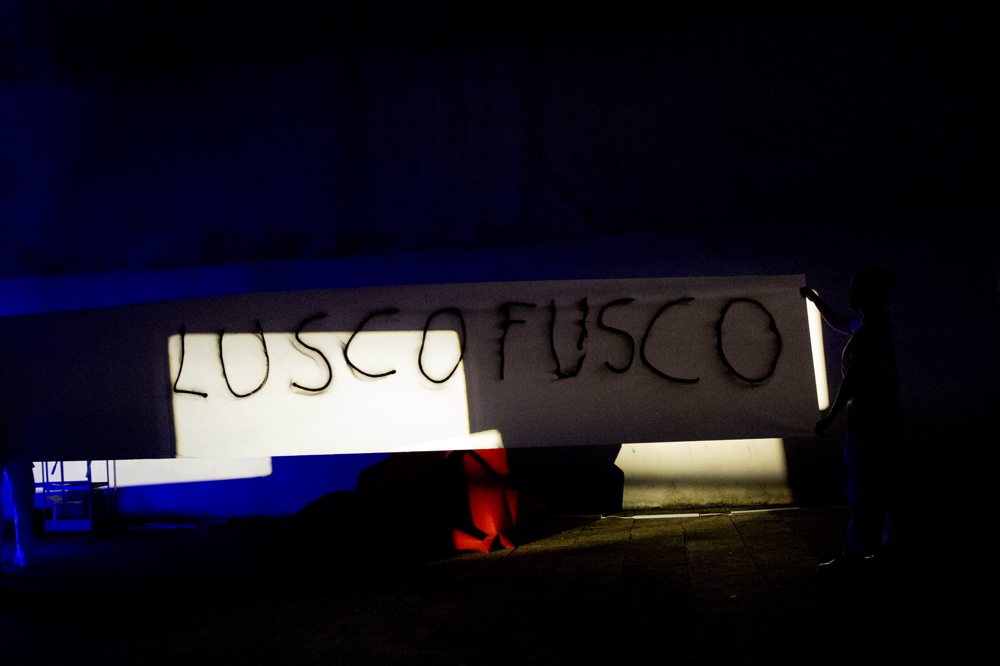
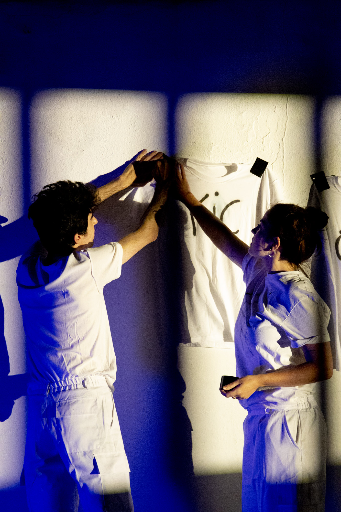
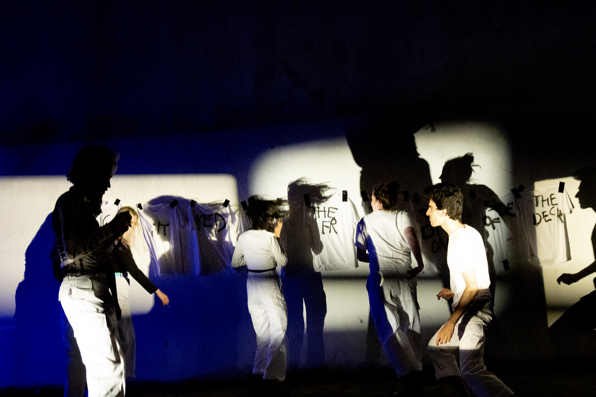
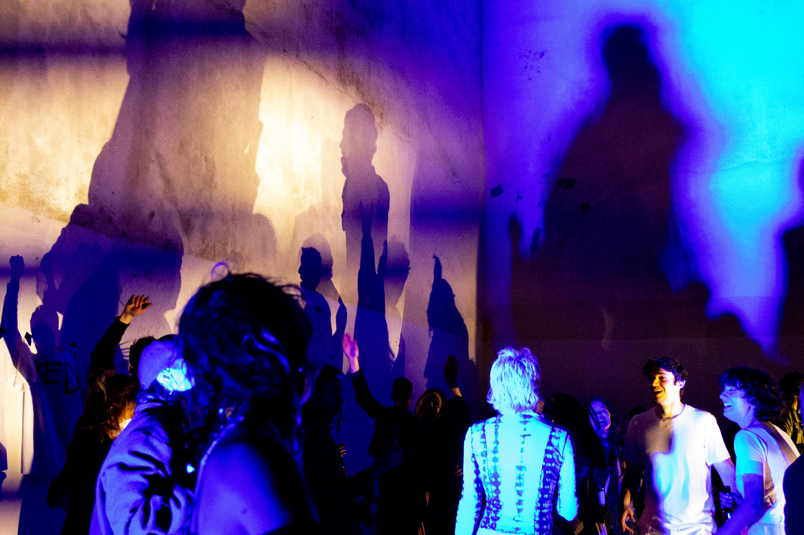
Photographs: María Meseguer, A Coruña 2021
2020-21
Performance-environment
Developed and presented with Las de Cuenca and with local skaters
16mm film, fabrics, cardboard, led lights, DJ set, prisms and torches, skateboards, spray, red carpet, white t-shirts, and other mixed media
"Re-inventing the film medium at the end of the film age means to re-conceptualize it as a "set of conventions derived from [...] the material conditions of [its] technical support, conventions out of which to develop a form of expressiveness that can be both projective and mnemonic".
Rosalind Krauss, A Voyage on the North Sea: Art in the Age of the Post-Medium Condition
'Kicked with the Front Foot on the Dark Side of the Deck' is a built environment where projection, performative intervention, and sound interact. The work has a structure in which different 'acts' give way to the construction and deconstruction of 'mutant' installations.
The performative actions consist in guiding objects, materials, bodily interventions (including skateboarding) and projections through the space. Taking as a starting point an exploration of the spatial and performative potentialities of the film apparatus, we challenge both the traditional supremacy of the projected image and contemporary expanded cinema's tendency toward perceptual immersion. Instead, we highlight notions of presentness, immediacy and corporeality in a work situated between sensory environment, performance and spatial montage.
Presentations:
Ojorimaconmáquina, La escocesa, Barcelona (December 2020)
Faculty of Fine Arts, Cuenca (January/February 2021)
S8 Mostra de Cinema Periférico, A Coruña (June 2021)
Ars Santa Mónica, Barcelona (Sept 2021)
Las de Cuenca: Tzuhan Hung, Toni Serrano, Paula Guerrero, Javi Montero, Bruno Delgado Ramo, Marta Feiner, dj K-sets, Ana Venceslá, Guillermo Grande, Itsaso Iribarren, Germán de la Riva and students of Faculty of Fine Arts, UCLM